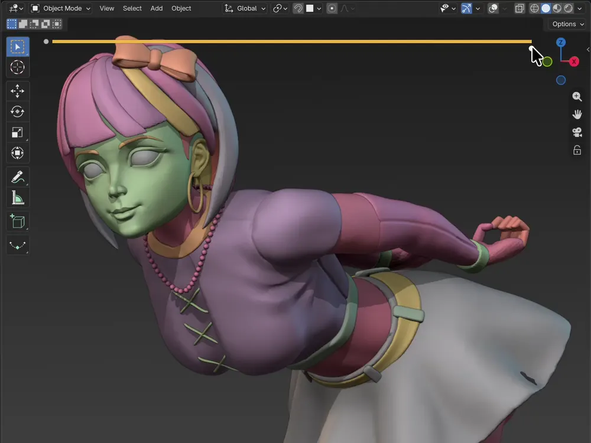

Designer: top navigation bar removed for now. The page leads with the centred logo and goes straight into the trailer. If a nav returns later it should stay minimal and not compete with the hero.
1 · Hero
Designer: this GIF is background-matched: it should feel drawn onto the cream page, not embedded in a player. No dark well, no play button, no chrome. It's the two-second "oh, I get it" before the trailer, so it autoplays and loops silently. Native size is 960×562, centred at its own ratio rather than stretched. The scrub bar is baked into the GIF, so nothing sits on top of it.
↺
Per-Object History
Independent history for each object. Switch objects, keep your history.
⇄
Scrubbable Timeline
Slide through your sculpt history and preview any step instantly.
🖌
Morph Brush New
Brush one part of the mesh back to an earlier step. The rest stays put.
🎬
Movie Mode
Export what you've made: your sculpt's history as a video.
🛡
Stable & Reliable
Built for real production. Tested well past 15 million polygons.
Ctrl+Z ❌ Scrub your history ✅
Hover your mouse below.

Move across to scrub ↔
Designer: the centrepiece and the one genuinely interactive element on the page. A visitor moves across it and watches a character build up or rewind: the actual feel of scrubbing before buying. Keep the first-use hover cue and touch support. For now it runs on a single WebP sequence: no region buttons, no set switching. No buy buttons in the hero; the marketplace supplies its own purchase sidebar.
PHOTO
"[Short quote. One sentence, max two lines. The 'someone I respect already uses this' cue.]"
[Name] · [studio / credit]
✦
Designer:interstitial testimonial pattern: a thin single-quote band recurring three times down the page (here, mid-page, before pricing). Not a section: a breath between sections. Keep all three visually identical and lighter than surrounding blocks. One quote each, never a carousel.
2–4 · History everywhere
🗂
Every object keeps its own undo history.
Switch objects without giving up your place. Each mesh carries a separate visual timeline, ready whenever you come back.
GIF: several objects in one scene, each scrubbed independently
GIF: vertex paint strokes scrubbed back and forth on the timeline
🎨
Vertex paint
Scrub through paint strokes with the same timeline you use for sculpting.
GIF: Edit Mode changes scrubbed back and forth on the timeline
📐
Edit Mode changes
Revisit vertex moves and other Edit Mode changes without stepping backward blindly.
Designer: per-object history remains the primary differentiator. Vertex paint and Edit Mode are supporting proofs, grouped into a compact pair so the page does not repeat three oversized cards with the same visual weight.
5 · Morph brush
🖌 Morph Brush New
Brush part of your mesh back in time.
Pick an earlier step, then paint over the area you want back. Only what you
brush travels; the rest of the sculpt stays exactly where it is.
GIF: THE MORPH SHOT
an earlier version of one region brushed back onto the current sculpt
the brushed area rewinds · everything around it holds perfectly still
GIF: picking the step on the timeline
1 · Pick a step
any point in this object’s history
GIF: brushing over the region
2 · Brush the area
[brush controls, strength / falloff, copy TBD]
GIF: turning the result, seam visible
3 · Only that part changes
the rest of the sculpt is untouched
Designer: the newest feature and the hardest one to grasp from a still image, so it needs motion first, words second.
It follows per-object history and vertex paint / Edit Mode, so by now the visitor understands scrubbing a whole object. This is the escalation:
“now paint time onto one part of it.” Full-width beat, never a tile. The three small GIFs are a
how-it-works strip; keep them clearly subordinate to the big one above (that one carries the idea, these only explain the steps).
On the morph GIF: the whole claim lives or dies on the viewer seeing that the surrounding mesh does not move.
Frame it so a recognisable landmark stays visibly fixed while the brushed region changes, and keep the timeline in shot so it reads
which step is being pulled from. A cut or a camera move at the wrong moment kills the proof.
Open question from us: naming. “Morph Brush” borrows a term ex-ZBrush users already know, but ZBrush’s morph brush
pulls from a single stored morph target, while ours pulls from any step in the history. If the familiarity is worth more than the
distinction, we lean into it; if not, the headline has to carry the difference on its own. Copy call, not a layout call.
6 · Movie mode
From timeline to playback
🎬
Movie mode
Turn your sculpt’s history into a video you can share.
GIF / VIDEO: movie mode output, the sculpt playing back as a film
Designer: sells itself as motion. Show the exported result, not the export dialog. Worth giving room; it's the feature people will share, which makes it marketing that markets itself.
PHOTO
"[Short quote. Ideally one that mentions movie mode or the morph brush, so it reinforces what was just shown.]"
[Name] · [studio / credit]
✦
7 · Face sets, masks & visibility
Face sets, masks & visibility
[one short line covering all three]
GIF: face sets
Face sets
GIF: masks
Masks
GIF: visibility
Visibility
Designer: a condensed group: heading on top, three small GIFs beneath. One short line of copy.
8 · Performance assurance
✦ It won't slow you down ✦
15M+*
polygons, still scrubbable.
* Tested on an RTX 4060 PC.
GIF: scrubbing a 15M+ polygon sculpt in real time Blender's statistics overlay visible, poly count readable no stutter, no lag
Designer: closes the feature run on purpose. By now the visitor has seen how much gets recorded and is silently asking "surely this destroys my framerate?", so answer it before they move on. No data table; the claim plus one GIF is the whole section, polygon figure as a headline number.
On this GIF: it's evidence, not decoration. The poly counter must stay legible. Don't crop it out, shrink it below readable size, or overlay anything on that corner.
9 · Also included
🖌
All sculpt brushes
Including cloth brushes. [one short line]
💾
Close it. Reopen it. Still there.
[Your history saves inside the .blend.]
Designer: both of these used to be full GIF sections; they are now text only. Two quiet cards, no media wells. They should read as a footnote to the feature run, lighter than anything above them.
10 · ZBrush comparison
☆
The ZBrush feature you've been missing
GIF: ZBRUSH AND OURS, SIDE BY SIDE
ZBrush's history slider on the left, ours in Blender on the right
same sculpt, same crop, scrubbed in sync
Designer: one GIF, no lists. The side-by-side is baked into the GIF itself, so the page just gives it room. Both halves must match in crop, scale and slider position so the eye reads them as equivalents. The pro / con list now lives in the detail half (section 14) and compares against native Blender, not ZBrush.
11 · Made with it
📷
Sculpted with Sculpt Rewind
SCULPT 1
[title]
by [artist]
SCULPT 2
[title]
by [artist]
SCULPT 3
[title]
by [artist]
Designer: real commissioned sculpts. Artwork is the hero; names small. Still the visual half, so no testimonial paragraphs.
12 · Facts strip
Blender [versions]
Saves in your .blend
Per-object history
15M+ polygons
▼ EVERYTHING BELOW IS THE DETAIL HALF, for readers already interested. Text-heavy is fine here. Nothing below this line should move above it.
13 · What it doesn't do
Let's be clear
It is
[a history layer for your sculpting work]
[a way to take back part of a mesh, not only all of it]
[a browsable, jump-anywhere timeline]
[saved with your file]
It isn't
[a replacement for Ctrl+Z]
[version control or a scene backup]
[unlimited: there is a step cap]
Designer: plain and unglamorous on purpose. Straight talk, not a feature panel.
14 · Native Blender vs add-on
Native Blender undo
[Blind undo, one step at a time]
[All-or-nothing: the whole mesh goes back, or none of it]
[One global undo stack, not one per object]
[A hard limit on how far back you can go]
[No way to compare two versions]
[History gone when you close Blender]
With Sculpt Rewind
[A visual timeline you can scrub]
[Morph brush: rewind only the part you paint over]
[A separate history for every object]
[Your whole session on a slider]
[Jump to any earlier state instantly]
[History saved inside the .blend]
Designer: the only pro / con list on the page, and it compares against native Blender, not ZBrush (ZBrush gets the side-by-side GIF in section 10). Sits down here with the other reading material, directly before the FAQ: a summary for someone weighing the decision, not a headline. Quiet reference table, not a hero moment. Rows line up across the two columns, point for point.
15 · FAQ
Questions
[Does it slow down sculpting?]
[Answer]
[Which Blender versions?]
[Answer]
[What exactly gets recorded?]
[Answer]
[How does the morph brush blend with the current mesh?]
[Answer]
[How much memory does it use?]
[Answer]
[What happens when I share the file?]
[Answer]
[Refunds / support?]
[Answer]
[Does the morph brush need matching topology?]
[Answer]
PHOTO
"[Short quote. The last-doubt closer. Trust: reliability, performance, or 'I use it every day'.]"
[Name] · [studio / credit]
✦
Designer: third and final strip, immediately before pricing: the last nudge before a buying decision.
16 · Pricing
✦ Pricing
[Tier 1: Free]
$XX
[feature]
[feature]
[Tier 2]
$XX
[feature]
[feature]
[Tier 3]
$XX
[feature]
[feature]
[Tier 4: Studio]
$XX
[seats]
[commercial]
Designer: pricing sits near the end, after all the proof, so the Pricing link in the nav must anchor straight here. Tier count, names and prices all still open; build flexible enough to drop to three tiers or two. The highlighted tier is a placeholder for whichever becomes the recommended default.
Designer: footer carries changelog and contact. Visible maintenance is a buying signal in this market.
Handoff notes
What this file is
A branded skeleton: the wireframe structure with a first pass at the visual direction: Fuzzy Bubbles headers, warm cream ground, orange accent, rounded cards, dark media wells for Blender captures. Treat colours and spacing as a starting point, not a spec.
Assets still needed
Logo / wordmark: the brush-and-swoosh mark; works small, light and dark.
Marketplace thumbnail: legible at ~250px on a phone; slider UI over a recognizable sculpt.
Morph brush GIF set: the big morph shot plus the three how-it-works clips. The set has to make “only the brushed part moved” unmistakable.
Interactive scrubber: frame/chrome, drag handle, "drag me" cue. We supply one WebP frame sequence.
Doodle set: sparkles, underline swooshes, arrows with handwritten labels, in the style of the mockups.
GIF frame treatment: a consistent frame/shadow/corner style for the 12+ media wells.
Social card (Open Graph) for Reddit / X / Discord previews.
Mobile layouts for all 17 blocks.
We provide: trailer, all GIFs, the WebP frame sequence, screenshots, final pricing and copy. You provide: layout, identity, visual system.